MVVM Light V5.2 is live!
.NET, Blend, MVVM, Technical stuff, Universal Windows Platform UWP, Windows 10, Xamarin, XAML17 Comments
This week I published MVVM Light V5.2 to Nuget and to the Visual Studio Gallery.
There are a few highlights which are described as always in the Change Log. See further below for a more detailed explanation of some of the changes.
Using Nuget to install MVVM Light
It is possible to add MVVM Light to an existing application using the Nuget package manager. This can be done over command line, or using the UI included in Visual Studio. There are two packages to consider when selecting MVVM Light in an existing application: MVVM Light “libraries only” (mvvmlightlibs) and MVVM Light “full package” (mvvmlight) which also adds some files and scaffolding to the application.
Installing using Visual Studio
In order to install either MVVM Light package using Visual Studio, follow the steps:
- Open your existing application in Visual Studio.
- In the Solution Explorer, right click on the project you want to add the references to, and select Manage Nuget Packages from the context menu.
Note: You can also manage Nuget packages in multiple projects by right-clicking on the Solution and selecting Manage Nuget Packages for Solution.
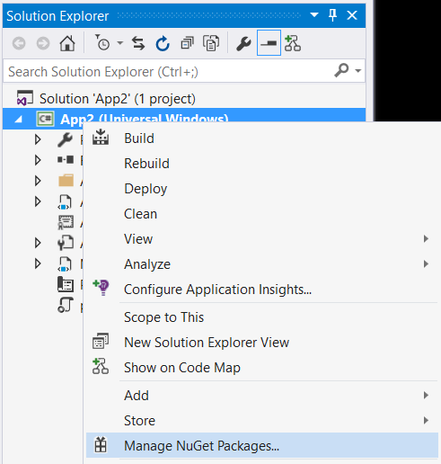
- In the Nuget package manager window, make sure that Package source is set to Nuget.org. Set Filter to All, and Search for “mvvmlight”.
- Select either MvvmLight or MvvmLightLibs, and click on the Install button.
Note: using the Nuget package manager window, you can also remove MVVM Light from your application later, if needed, or upgrade to a newer version.
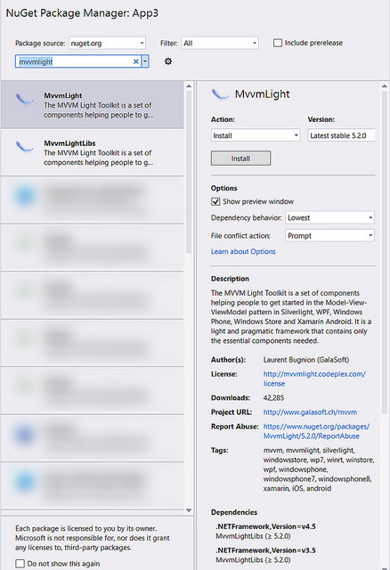
(click for full size)
This action installs the selected package in your application.
Libraries only
If you select the “mvvmlightlibs” package, this installs the GalaSoft.MvvmLight assemblies in your application. In addition, it installs the CommonServiceLocator package, which is a reference needed by MVVM Light. No other changes are made to the application.
Full package
Note: if you add MVVM Light to a class library, you should use the “mvvmlightlibs” package only!
If you select the “mvvmlight” package, it installs the “mvvmlightlibs” package to your application, and in addition adds two files to your project:
- ViewModelLocator.cs
- MainViewModel.cs
If your application is a Windows XAML-based app, it also executes a script to modify the App.xaml to add the ViewModelLocator to the application in a way that makes it possible to use design time data in Blend.
Note: The script is only executed in applications containing an App.xaml. In Xamarin.Android, Xamarin.iOS and Xamarin.Forms, the script doesn’t modify the application.
Caution: Full package in Windows 10 Universal applications (UWP)
There is a known issue when you install the “mvvmlight” package in Windows 10 universal applications. The Nuget team unfortunately changed the way that Nuget works for this framework, and it doesn’t allow installing additional files, or running scripts anymore. Because of this, installing the “mvvmlight” package in Windows 10 UWP applications creates the exact same result as installing the “mvvmlightlibs” package. Because running a script is not allowed, it is not even possible to warn the user.
I will publish more detailed information on how to add the scaffolding to a Windows 10 UWP application manually. Stay tuned.
Caution: Portable.MvvmLightLibs is discontinued
If you search in Nuget for “mvvmlight”, you may notice a package named “portable.mvvmlight”. This package’s description mentioned that it is discontinued. Use the “mvvmlightlibs” package instead, which is also featuring portable class libraries, and is actively maintained.
Using the Visual Studio extension VSIX
If you wish to start with a fresh new template with all the scaffolding in place, and in addition get code snippets right into Visual Studio, then the VSIX is for you!! This is a simple installer that will install MVVM Light templates and snippets into your favorite IDE. Currently, we support Visual Studio 2012, 2013 and 2015.
Installing from the Visual Studio gallery
The easiest way to install the MVVM Light extension is directly from within Visual Studio with the following steps:
- Open the menu Tools / Extensions and Updates.
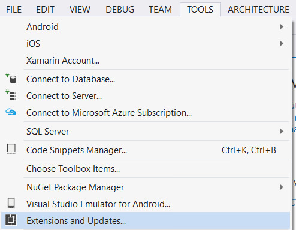
- In the Extensions and Updates windows, select Online on the left.
- Select Visual Studio Gallery.
- Enter the search string “mvvmlight” in the search box.
- Select the MVVM Light extension and press Download.
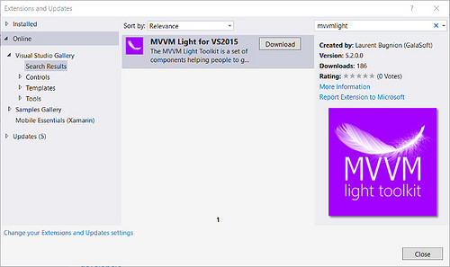
(click for full size)
- After installation, you need to restart Visual Studio (this is standard procedure for all VSIX installations).
Installing from Codeplex
If for some reason you don’t have access to the Visual Studio gallery, or if you want to save the VSIX file for offline installation, you can head to the MVVM Light Codeplex repository.
Make sure to download the correct VSIX for your favorite Visual Studio edition. Currently we support Visual Studio 2012, 2013 and 2015.
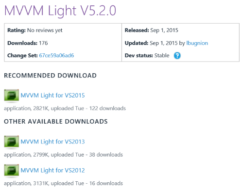
The new project templates
After you install MVVM Light, you will immediately see project templates in the File, New Project dialog. Creating interesting project templates is a challenge, because you also don’t want to overload the “empty template” with too much stuff that needs to be deleted. However a project template is also a good place to add a few simple samples to teach the basics to the new users.
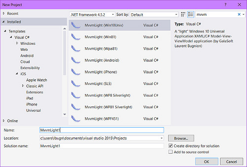
(click for full size)
In this spirit, I created new project templates for Windows 10 (Universal), Xamarin.iOS, Xamarin.Android and Windows Phone 8.1 with a set of features that demonstrates how the components of MVVM Light can be used. It is not intended as a complete tutorial (please head to the Pluralsight course for that), but it should give you a good idea of how MVVM Light can enhance your application.
The features
The new project templates for Windows Phone 8.1, Windows 10, Xamarin.iOS and Xamarin.Android feature most of the MVVM Light components and a small sample for each of these components.
Note: I will gradually update the project templates for other platforms too.
The user interface looks like this:
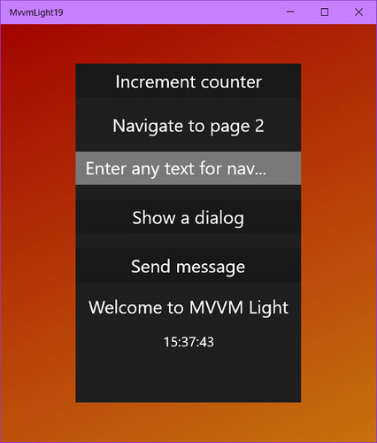
Application in Windows 10 (desktop)
The application features the following features:
- Standard MVVM Light scaffolding: ViewModelLocator, MainViewModel
- Design mode: In ViewModelLocator and DesignDataService
- ViewModelBase and PropertyChanged (with the Set method): In MainViewModel.cs
- Databinding in MainPage.xaml
- RelayCommand: In MainViewModel.cs
- Databinding in MainPage.xaml
- DispatcherHelper
- Initialization in App.xaml.cs (Win10 and WinPhone), App.cs (Android), AppDelegate.cs (iOS)
- Usage in MainViewModel (RunClock method)
- Messenger
- Registration in App.xaml.cs (Win10 and WinPhone), MainActivity.cs (Android), AppDelegate.cs (iOS)
- Sending message in MainViewModel.cs
- SimpleIoc
- Initialization in ViewModelLocator
- Resolution in MainViewModel.cs
- NavigationService
- Configuration in ViewModelLocator
- Navigation with parameter from MainViewModel
- Back navigation, Retrieving parameter in SecondPage (Win10 and WinPhone), SecondActivity (Android), SecondViewController (iOS)
- DialogService
- Registration in ViewModelLocator
- Usage in MainViewModel
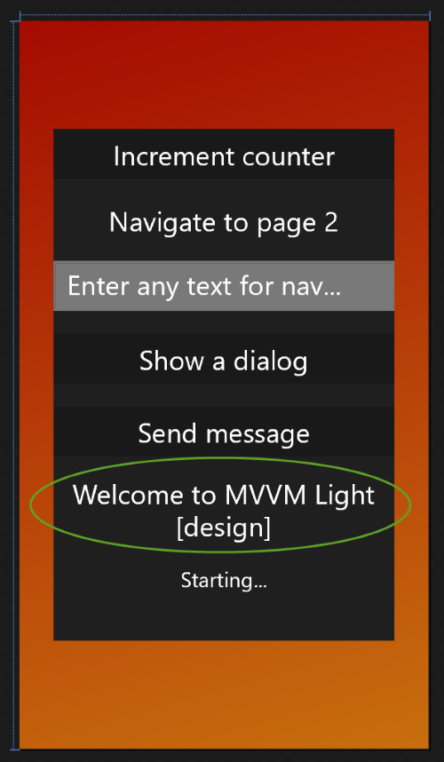
Design mode: see DesignDataService and ViewModelLocator
Android, iOS, Windows Phone 8.1, Windows 10
The new template is available for Windows 10 Universal, Windows Phone 8.1, Xamarin.Android and Xamarin.iOS. In addition, there are still the “old” template available for Windows Phone 8.0 and 8.1 Silverlight, Windows 8.1, WPF, Silverlight 5.
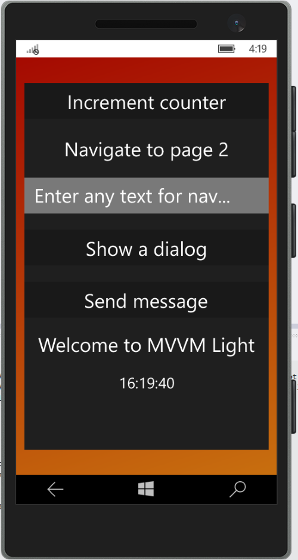
Application in Windows 10 (phone)
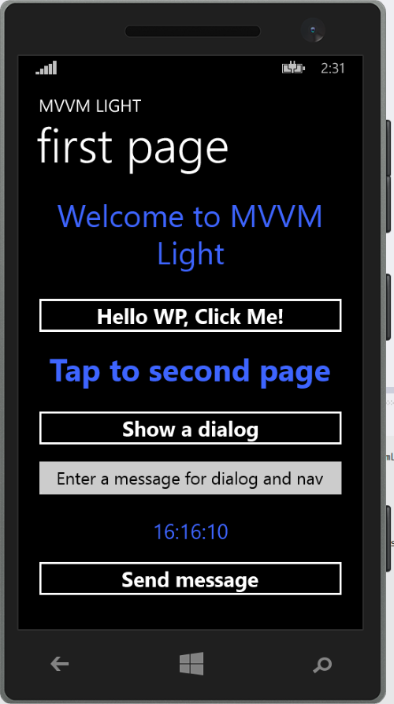
Application in Windows Phone
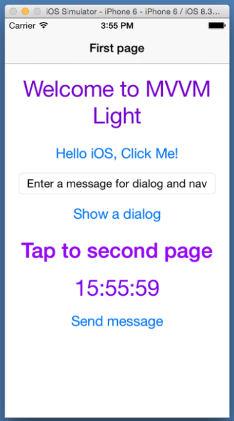
Application in iOS
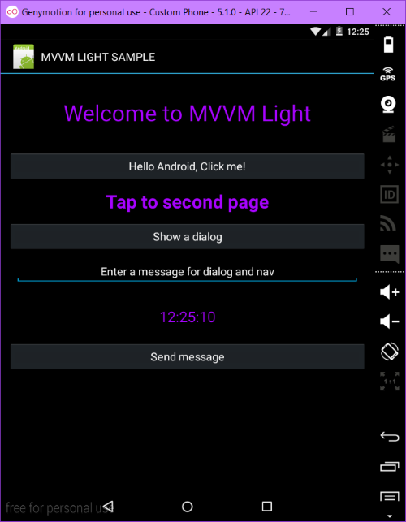
Application in Android
The Code Snippets
Like in previous versions, the Visual Studio extension is also installing code snippets. You can see the list of code snippets by placing the cursor anywhere in the code, and typing “mvvm”.
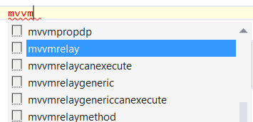
The following code snippets are available:
- mvvmdroidelement (Xamarin.Android only): A property with backing field exposing a UI element retrieved from the resources.
- mvvmformsbprop (Xamarin.Forms only): Create a Bindable Property for Xamarin Forms. See below for details.
- mvvminpc* (multiple variants): A property raising PropertyChanged with a string. The class using this property should inherit GalaSoft.MvvmLight.ObservableObject.
- mvvmlocatorproperty: A ViewModel property to be added to a GalaSoft.MvvmLight.ViewModelLocator class.
- mvvmpropa: Registers an Attached DependencyProperty (WPF).
- mvvmpropdp: Registers a DependencyProperty (WPF).
- mvvmrelay* (multiple variants): Creates and initializes a new RelayCommand
- mvvmslpropa: Registers an Attached DependencyProperty (Silverlight).
- mvvmslpropdp: Registers a DependencyProperty (Silverlight).
- mvvmvm: A property allowing easy access to a view’s DataContext.
A few new features in the spotlight
V5.2 fixes quite a number of issues reported by users. In addition, the two following features are new:
DispatcherHelper in Android and iOS
DispatcherHelper is a convenient helper class that can be used to “dispatch” instructions from a background thread to the main thread. This is needed when, for example, a UI element needs to be updated from a worker thread. This is also the case if a worker thread updates a property which raises the PropertyChanged event, and a databinding is connecting this property to a UI element’s property (for example a TextBlock.Text property).
In the new project templates in Windows 10 Universal, Windows Phone 8.1, Xamarin.Android and Xamarin.iOS, this is demonstrated by implementing a clock. A worker thread is started in the MainViewModel’s RunClock method. This worker thread updates the Clock property (of type string) every second. Because a databinding is set between the Clock property and a label on the user interface, the DispatcherHelper needs to be used.
In V5.2, this class is made available to the Xamarin.Android and Xamarin.iOS frameworks too (it was already available in the XAML-based frameworks before).
Note: At this time, DispatcherHelper cannot be used in a portable class library. I am working on a solution.
Xamarin.Forms “bindable property” code snippet (mvvmformsbprop)
In Xamarin.Forms, a concept similar to XAML’s DependencyProperty exists under the name “BindableProperty”. Declaring a BindableProperty is tedious and repetitive. This is why I made a code snippet available in V5.2 which helps the developer to declare a new BindableProperty. This snippet is similar to the previously existing
Conclusion
Hopefully you will find that MVVM Light is as useful in Windows 10 universal applications than in all other supported frameworks. With Windows 10 and Xamarin support, the range of devices that your applications can reach is greater than ever (I cannot wait to see MVVM Light applications running on HoloLens for instance 
Happy coding
Laurent
September 5th, 2015 at 07:35
Again an AWESOME work Laurent! Thanks for your great framework, tooling and templates which makes our life much simpler.
September 5th, 2015 at 07:44
Merci l’ami
September 5th, 2015 at 09:26
Anything new for WPF developers? I was looking for Navigation Service implementation…
September 5th, 2015 at 10:08
Awesome work as always, Laurent!
September 11th, 2015 at 14:47
[…] MVVM Light V5.2 is live! Laurent Bugnion announces the release of MVVM Light V5.2. […]
September 12th, 2015 at 14:31
[…] MVVM Light V5.2 is live! – UWP-támogatással, mindennel. […]
September 15th, 2015 at 20:59
Having some issues with back navigation is there some kind of Forum where it’s possible to ask some questions?
September 15th, 2015 at 21:02
Hi,
You can write in http://mvvmlight.codeplex.com/discussions
Greetings
Laurent
October 3rd, 2015 at 19:51
Hello,
first I want to say – thank you for your mvvm lib!
I like the new Navigation Service especially in use with Xamarin. But why is the navigateTo Method not virtual? When it would be virtual I could extend the service and override it to pass custom link (custom://detail/1). Then I can manipulate it and call the base method. Now I have to call a custom method (NavigateToCustom)… Or is this thought completly shit and this would be done with an other technique?
bye
Markus
January 31st, 2016 at 01:19
Hi Laurent,
Thanks for all your hard efforts over the years, I’m a long time user of Mvvm Light – I enjoy the simplicity and pragmatism.
I’ve just started experimenting with Windows 10 Universal and am trying to use your new Mvvm Light Vs2015 extension. When I create a new project using the Mvvm Light Win10 Universal template, the resulting project (with no user changes) doesn’t build. The build error is:
Oject reference not set to an instance of an object.
at Microsoft.NuGet.Build.Tasks.ResolveNuGetPackageAssets.GetAnalyzers(JObject lockFile)
at Microsoft.NuGet.Build.Tasks.ResolveNuGetPackageAssets.ExecuteCore()
at Microsoft.NuGet.Build.Tasks.ResolveNuGetPackageAssets.Execute() MvvmLight1
Is this a pre-release version, or a localised problem do you think?
Thanks
Cheers
Ben
January 31st, 2016 at 03:32
Further to my message above, here’s a little more information.
I’m using Visual Studio 2015 Community.
I’ve created a blank Windows 10 Universal app using the standard Vs2015 template, which builds ok after creation. Then I add Mvvm Light 5.2, right after which the project no longer builds with the above exception.
My Nuget.exe version is 3.3.0.212
Hope that helps. Let me know if I can help in any way.
Cheers
February 1st, 2016 at 02:05
Hi,
I’ve managed to resolve this by uninstalling and reinstalling the Mvvm Light VSIX Extension. All is working fine now
Cheers
Ben
February 4th, 2016 at 10:20
Whew, happy to hear that. Thanks!
March 16th, 2016 at 20:11
Does anybody else had a problem with EventToCommand on .Net 4.5 WPF solution running on VS 2015 update 1 on a Windows 10 machine?
I got this error: The type ‘EventToCommand’ from assembly ‘GalaSoft.MvvmLight.Platform’ is built with an older version of the Blend SDK, and is not supported in a Windows Presentation Framework 4 project.
April 5th, 2016 at 00:58
Hello Laurent,
I’ve spent so long on this issue of mine and I don’t know what I’m missing. I cannot get the ‘Get’ property to fire on a Textbox change in UWP. I built the exact same code in WPF and it works like a charm. I’m using MvvmLight version 5.2. I created a simple Textbox app, here is my xaml…..
And here is my ViewModel code….
private string homeUserName;
public string HomeUserName
{
get { return homeUserName; }
set
{
if (this.homeUserName != value)
{
this.homeUserName = value;
RaisePropertyChanged(() => this.HomeUserName);
}
}
}
When I type a letter in the textbox, it triggers the Set but not the Get. This is the same behavior in a Listbox. Is there something about UWP that’s different than WPF? It works normal in WPF.
April 5th, 2016 at 00:59
Sorry here is my Xaml code
April 5th, 2016 at 01:00
*excluding the tags since they won’t printout in the comments…
TextBox x:Name=”txUsername” Text=”{Binding HomeUserName, Mode=TwoWay, UpdateSourceTrigger=PropertyChanged}” Width=”350″ Height=”35″